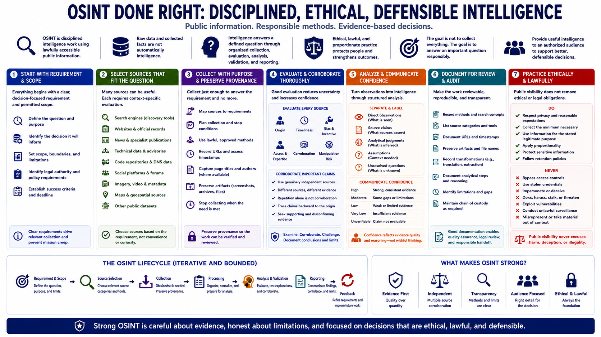

Course Summary and Key Takeaways
Connecting to LMS... Progress: in progress

Narration
OSINT is disciplined intelligence work using lawfully accessible public information. Raw data and collected facts are not automatically intelligence. Intelligence answers a defined question through organized collection, source evaluation, analysis, validation, and reporting.
Begin with a clear requirement and permitted scope. Select source categories that fit the question, preserve provenance, and stop collecting when the need is met. Search engines, websites, records, news, technical data, repositories, social sources, imagery, and maps all require context-specific evaluation.
Corroborate important claims through genuinely independent evidence. Examine origin, timeliness, bias, access, expertise, and manipulation risk. Distinguish direct observations from source claims and analytical judgments, and communicate confidence without pretending uncertainty has disappeared.
Document methods, URLs, timestamps, preserved artifacts, transformations, and reasoning so the work can be reviewed. Apply privacy, proportionality, access limits, and retention discipline. Public visibility never excuses harassment, doxxing, stalking, deception, unauthorized access, or unlawful surveillance.
The goal is not to collect everything. The goal is to answer an important question responsibly and provide useful intelligence to an authorized audience. Strong OSINT is careful about evidence, honest about limitations, and focused on decisions that are ethical, lawful, and defensible.